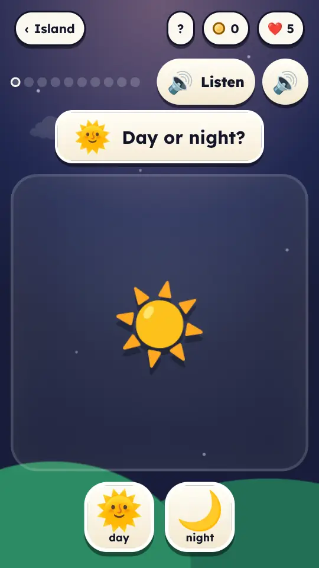

All labs › Physics › Day and Night
Physics lab · Raju's Workshop Yard
Day and Night
दिन और रात · यह दिन की चीज़ है या रात की?
Sort pictures into day things and night things: the Sun, the Moon, stars, owls and more.
- Physics
- Explorer · ages 4–7
- 10 levels
- English · हिंदी
- Free, no sign-up

How it works
Day or night?
- A picture shows up, such as the Sun.
- Tap Day if you see it in the day sky, Night if you see it at night.
- The Sun shines in the day. Owls and stars come out at night.
Explorer labs read instructions aloud, and a wrong try never costs anything.
Why it works
The big idea
As the Earth spins, our side faces the Sun (day) and then turns away from it (night), like turning your face towards and away from a lamp.
What children learn
Skills in this lab
- Day and night
- What we see in the sky
- Animals that are awake at night
For parents and teachers
This lab is in the Explorer band (ages 4–7). Each player picks a band, and sees only the labs made for it.
Curio Island is free in the browser with no sign-up. Progress is saved on this device only. Ads are child-safe and non-personalised, and never appear inside a lab.
Part of Raju's Workshop Yard on the island. 10 levels to finish.